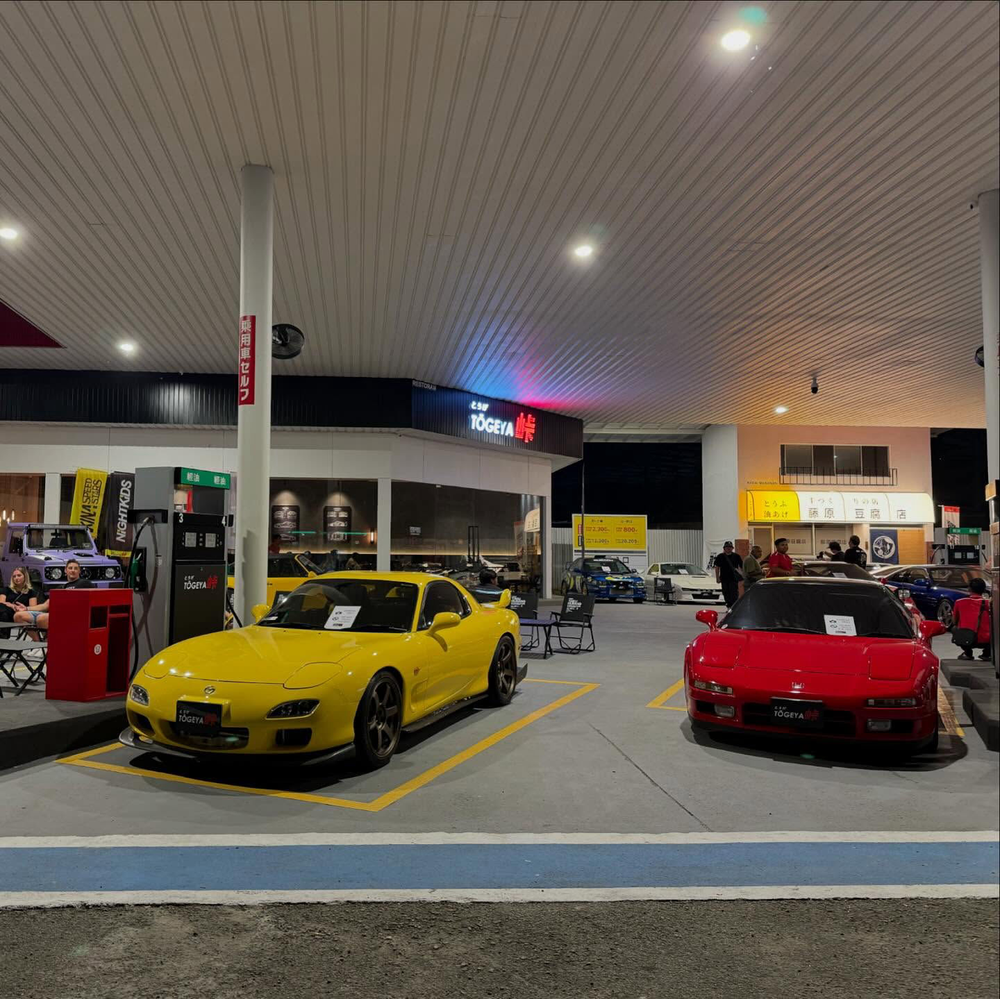

touge racing was an underground obsession something you’d only hear about in hushed conversations at Tōgeya car meets

Tōgeya Malaysia is a popular Japanese-themed car culture spot and hangout place in Malaysia, loved by car enthusiasts and fans of Japanese culture.
It was originally an abandoned petrol station that was later transformed into a Tōuge-inspired Japanese-style location, creating an atmosphere similar to Japanese street and anime scenes.
Tōgeya is a popular meetup location for car enthusiasts, especially on weekend nights, where modified cars, sports cars, and JDM vehicles gather.
The design is inspired by Japanese mountain road culture and street elements, featuring Japanese road signs, retro petrol station designs, and anime-style decorations.
The venue keeps the original petrol station structure, enhanced with Japanese road signs, lightboxes, and decorations that resemble a mountain roadside stop in Japan.